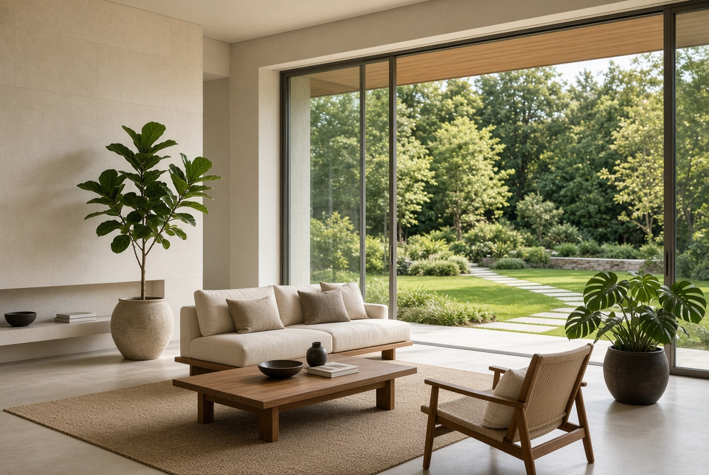
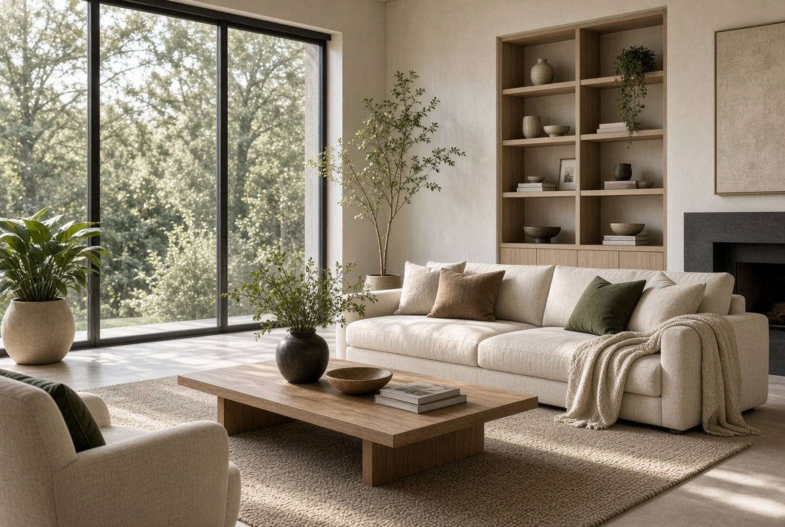
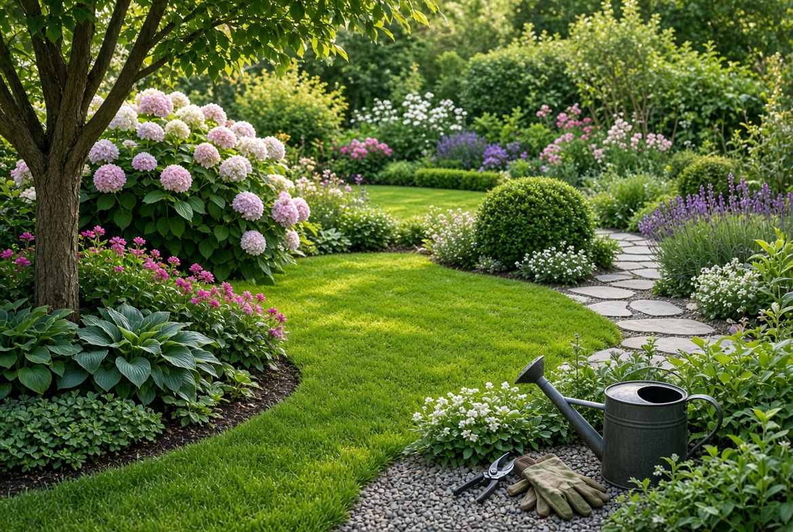
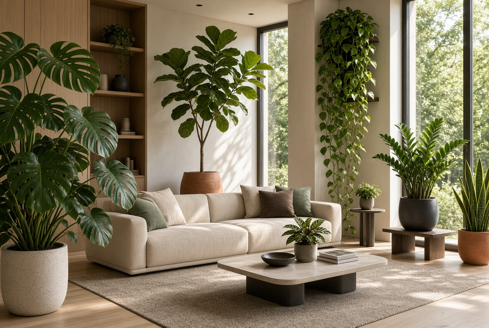

Cómo crear un hogar elegante sin gastar una fortuna
Ideas sencillas para renovar tus espacios y conseguir un ambiente acogedor.
Leer artículo →Consejos prácticos, inspiración y soluciones para crear espacios más bonitos, cómodos y funcionales.
Explorar artículos

Ideas sencillas para renovar tus espacios y conseguir un ambiente acogedor.
Leer artículo →
Descubre prácticas sencillas para mantener tus plantas saludables durante todo el año.
Leer artículo →
Una selección de plantas que pueden transformar cualquier rincón de tu casa.
Leer artículo →Ideas para decorar y renovar tu hogar.
🌿Consejos para cuidar y mejorar tu jardín.
🪴Guías para cultivar plantas dentro de casa.
🛠️Proyectos creativos para hacer en casa.
🧺Métodos para mantener cada espacio organizado.
✨Soluciones prácticas para cuidar tu hogar.
Casa & Jardín nace para compartir ideas, conocimientos y soluciones prácticas relacionadas con el hogar, la decoración y la jardinería.
Nuestro objetivo es ofrecer contenidos claros, útiles y fáciles de aplicar en la vida cotidiana.
Conoce nuestra historia →